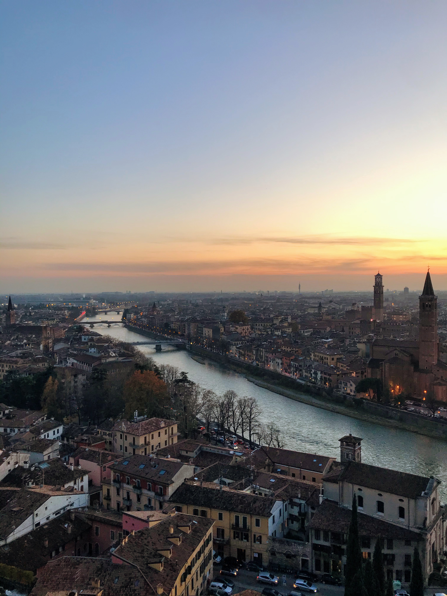
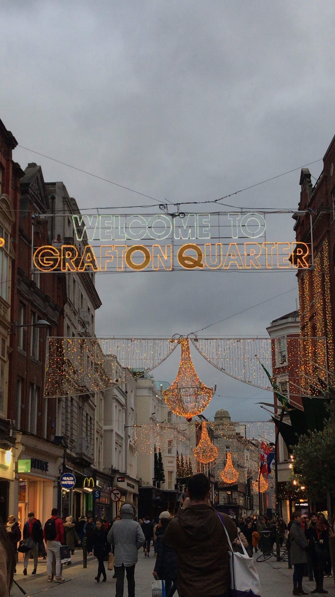

You have brains in your head. You have feet in your shoes. You can steer yourself any direction you choose!
Life in The City of Love
2019 was the year for travel. When I think about how my friends and I ran across Europe from one corner to the other for four entire months, I feel nothing but gratefulness. Although I initially picked Verona because of the business classes offered there, I later realized that I wouldn't have wanted to go anywhere else. This Italian city sits right in between Venice and Milan, two of the cheapest airports in Europe. A short bus ride north and I could be in France, Switzerland, or Croatia. Another short bus ride in the opposite direction and I could be roaming around Rome (pun intended).
ps. I am not a professional photographer and could never do Europe and it's beauty justice.
pss. There is absolutely no way I could ever put to words how amazing this experience was. I'm not even going to try. There are enough travel guides on Pinterest. I will write down a couple of bullet points that I believe are good to keep in mind.
Let's start with Verona, shall we?
Verona and it's people are extremely welcoming from the very beginning. On our first night there, all 64 of us walked around the city after dinner and found some stairs to sit at facing the river while we went through proper ice breaker games. Locals gathered around us and shared some jokes with us, not many, of course, due to our limited italian, but hey, smiles are universal!
Good food is cheap. Very cheap. It is cheaper to buy a pizza than it is to buy groceries. Postmating food (or the italian equivalent) was roughly 4 €, free delivery. Enough said.
Castel San Pietro was my favorite spot in the city. I could be found here at least twice a week, and most certainly any time I needed to clear my head. With that view, I'm sure you can imagine why.
Best location. I found a flight to Dublin from Milan for 2.99€.
Bonus! It's extremely walkable, safe and a ton of people speak (or atleast understand) English.
Deal breaker: 9€ all you can eat sushi. You can order anything/everything on the menu up to TWO times!
Dolphins and Rovinj, Croatia
Bring euros. Hard to exchange dollars to euros and extremely high atm exchange rates (we unfortunately lost 60 US dollars).
Walk to the water and ask about the sunset dolphin boat ride. 10€, wine and snack included. Thank me later.
Rome around the old town until you stumble upon Pizzeria - Spaghetteria S. Giacomo. Then, order their Carbonara. I still think about this.
Does not apply to all, but if you took a bus here, please please PLEASE make sure you read your departure time correctly. Otherwise you'll be walking around town enjoying your gelato while you see your bus driving away.
First hostal experience and Mykonos
The city of Mykonos closes after the second weekend in October. Yes, you read that right. It CLOSES. Plan your trip accordingly. Or, like us, travel on the last weekend it's open when the flights are cheapest and enjoy feeling like you own the town.
Spend most of your savings on that flight and rest assured that you can easily survive the weekend on 30€. I did. Gyros are enormous and 4€.
If you're on a budget, keep in mind that hostals aren't always your best option. Especially if you are a big group. We paid 40€ to be scrammed in a tiny (tiny) hostal while another group of friends got a huge AirBnB place with an infinity pool for <35 a night.
Make time to get lost.
Dublin, you were lovely
Spend more than a weekend in Ireland. We unfortunately did not have enough time to go to the Cliffs of Moher, although this only means I have to go back!
Bring enough coins and cash to hand out in Grafton Street. You will fall in love with every street performer and your biggest regret will be not having enough money to buy their CD's.
Visit Temple Bar for the experience, but leave enough time to make your way to Busker's.
Order the Dutch pancakes at The Bakehouse. I can't explain the difference, but WOW.
Remember that you are in Dublin and that you can spare 14€ to go into the library at Trinity College. Com'mon.
Innsbruck to Nordkette Moutain Top
The cost to go to the Nordkette Mountain Top by the cable car is 36€.The cost of the Innsbruck Card for a day (with access to over ten attractions including the cable car to the Nordkette and the Swarovski Crystal World) is 42 euros. Absolutely worth it in my books.
Pay attention to the cable car so you don't think you're at the top when you are not. Hint: If you're by the hotel, you are NOT at the top.
Yes, the top of the mountain is as cold as it seems. Come early and enjoy a drink at the hotel bar.
Hang out at the Christmas markets. Get some hot chocolate while you're at at it.
So, how many times have you checked google flights already?